Independent Mobile App Design
MoodNote
A gentle emotional wellness space for reflecting, regulating, and receiving support without the pressure of traditional social media.
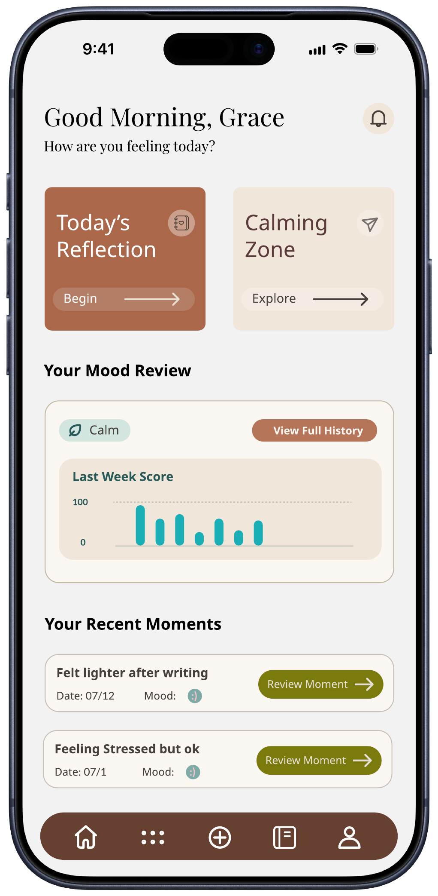
Project Overview
Creating a softer space for emotional wellbeing
MoodNote is a mobile wellness concept that helps users record how they feel, reflect privately, share selected moments with trusted friends, and access short recharge activities.
The project explores how emotional care can feel supportive and personal without becoming overly clinical, task-driven, or socially performative.
Problem & Goal
Balancing self-reflection with gentle connection
Many wellness apps emphasize tracking and completion, while social platforms often turn emotional sharing into a public interaction. MoodNote needed to support both private reflection and connection without making users feel evaluated.
The goal was to create one calm system where users could understand their emotions, choose the level of privacy they wanted, and take a small supportive action when needed.
Information Architecture
Organizing reflection, support, and recharge into one system
The sitemap organizes MoodNote around five bottom-navigation destinations: Home, Recharge Zone, Create Moments, Moments, and Profile. Mood Review remains available from the global header so users can revisit emotional patterns from across the product.
This structure keeps private reflection, supportive sharing, and guided wellness activities distinct while still allowing them to connect naturally.
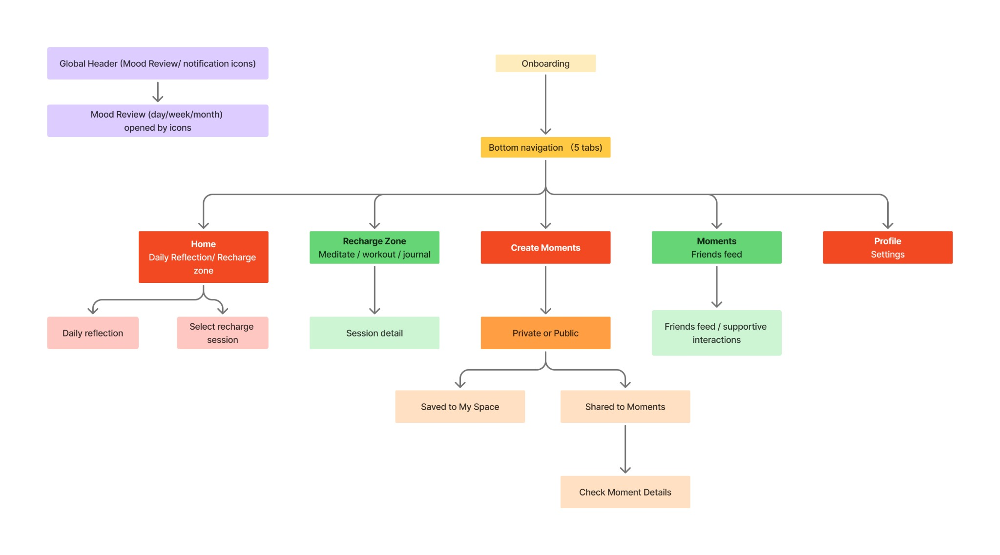
Core User Flow
Giving users control over how a moment is shared
The primary reflection flow begins from Today’s Reflection and moves through writing, mood tagging, and photo selection. The key decision is whether a moment should remain private in My Space or be shared to Moments.
For shared moments, supportive interactions stay lightweight and can lead to private replies rather than a public comment thread.
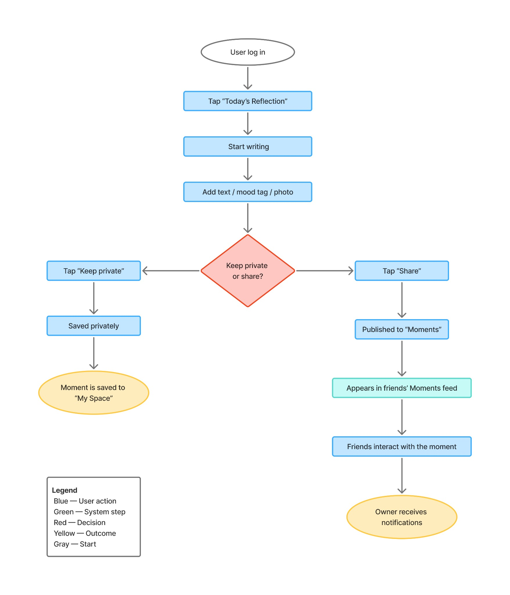
Supporting Flow
Turning the Recharge Zone into a flexible path
The supporting flow maps how users browse meditation, workout, and journal options. Meditation and workout sessions include setup choices before the activity begins, while journaling reconnects users to the reflection flow.
The flow was designed to offer multiple exits and next steps, so completing a wellness activity never feels like a rigid requirement.
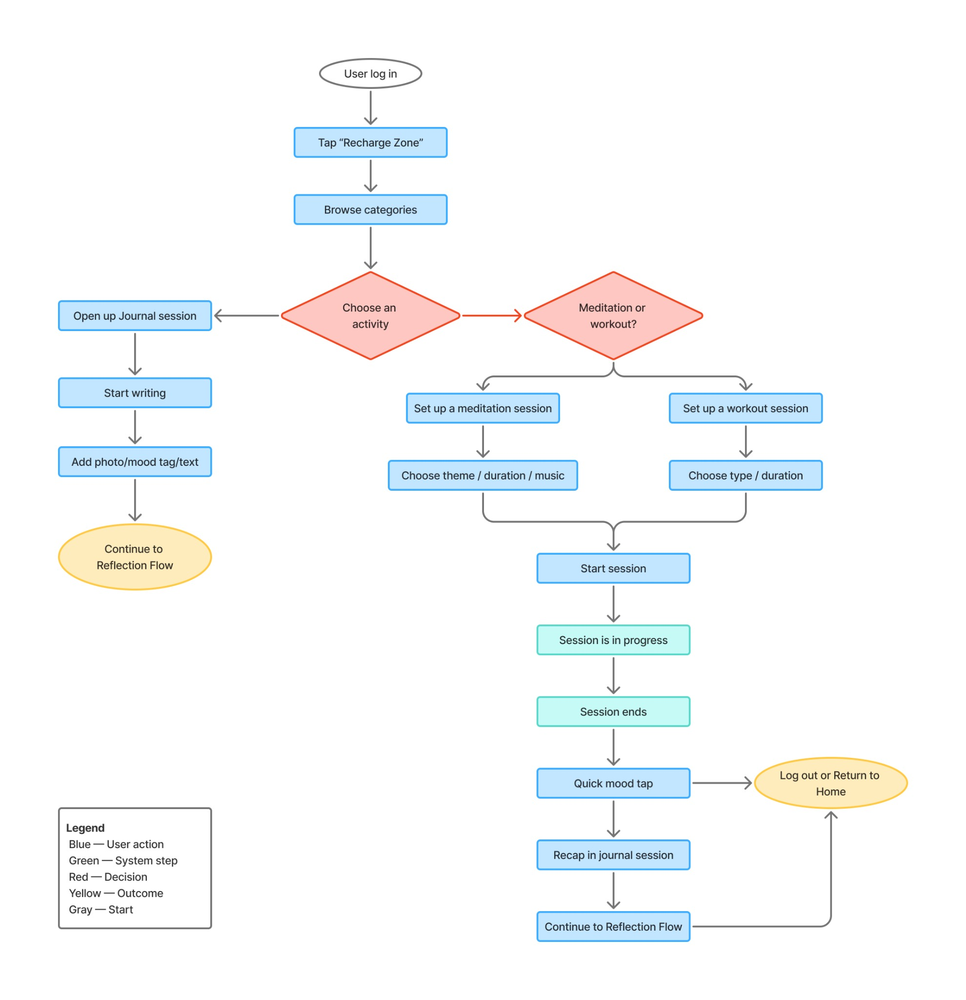
Wireframes
Establishing structure before visual refinement
Low-fidelity screens will be added here to explain the hierarchy and interaction structure across the Home, Create Moment, Moments, and Recharge Zone experiences.
Visual Direction
A warm, gentle, and expressive interface
The visual system combines warm neutrals, muted mood colors, soft cards, and expressive illustration. Language such as “Reflection,” “Moment,” and “Recharge” helps the product feel invitational rather than demanding.
Final Design 01
Core product areas
The bottom navigation gives users direct access to three primary areas: Home, Recharge Zone, and Moments. Together, they frame MoodNote around reflection, emotional regulation, and trusted connection.
Home acts as the personal starting point, Recharge Zone offers guided wellness activities, and Moments provides a calmer space for sharing with friends.
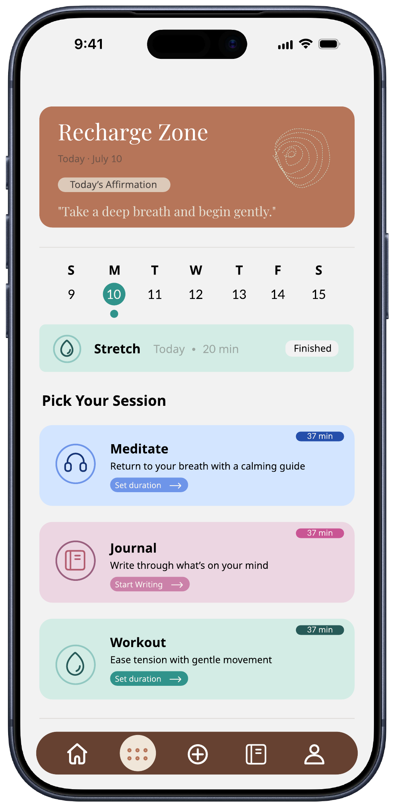
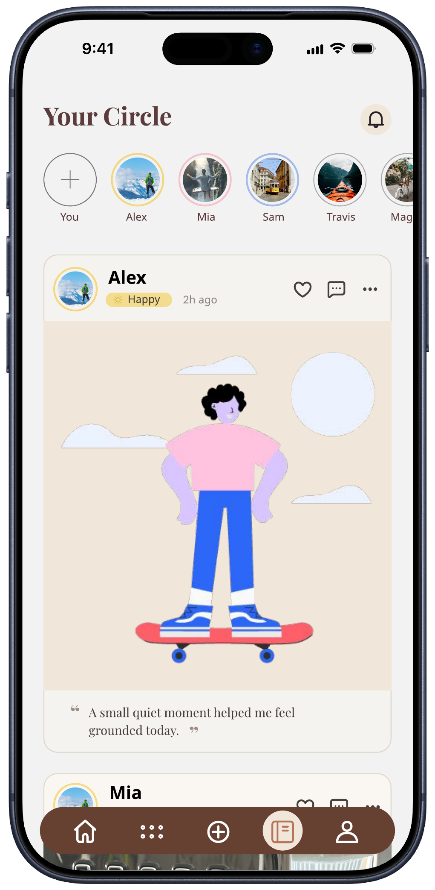
Final Design 02
Creating and sharing a moment
The moment flow guides users from choosing a photo to writing a reflection, adding mood tags, and selecting a sharing preference. A moment can remain private or appear in Moments for trusted friends.
After sharing, users can view the post in context and send support or reply privately without creating a public comment thread.
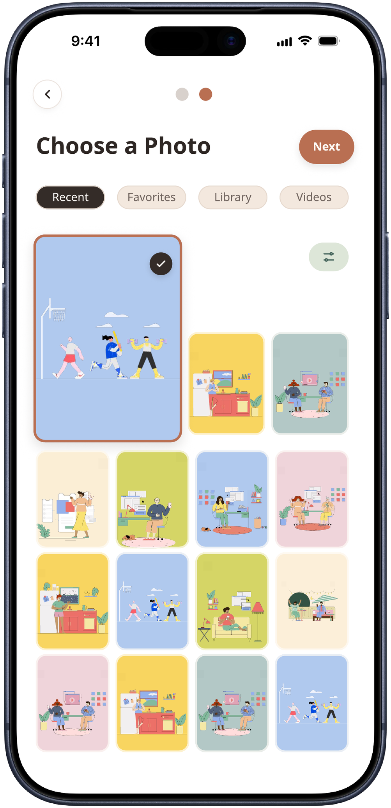
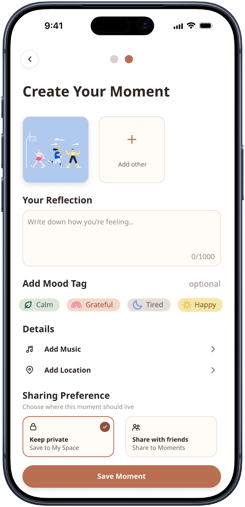
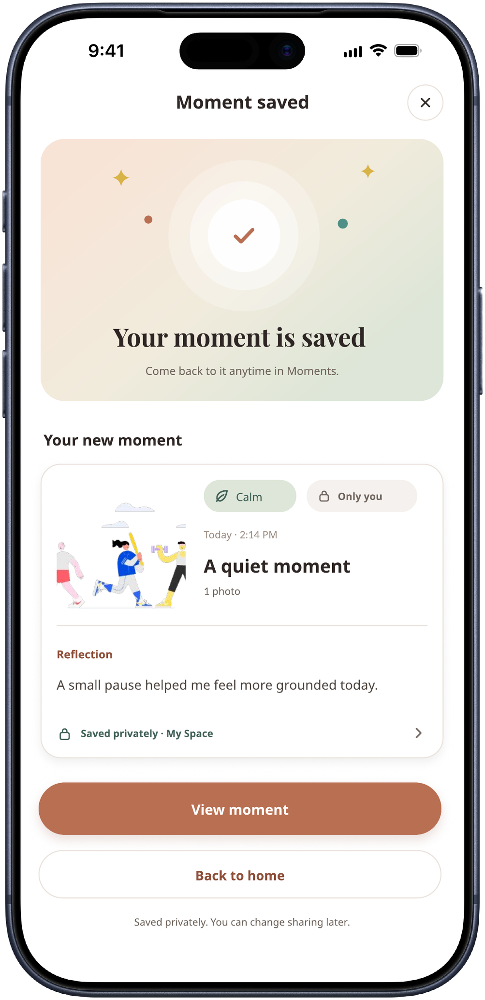
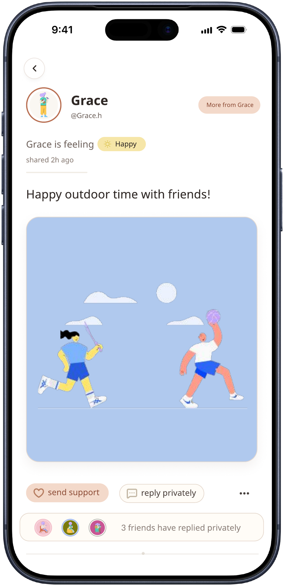
Final Design 03
Guided recharge experience
The Recharge Zone presents meditation, journaling, and gentle movement as flexible options rather than required tasks. Users can choose what feels manageable and review recommendations before beginning.
The flow continues from a lightweight session setup into active guidance and a post-session check-in, including duration, background music, voice guidance, and reflection after completion.
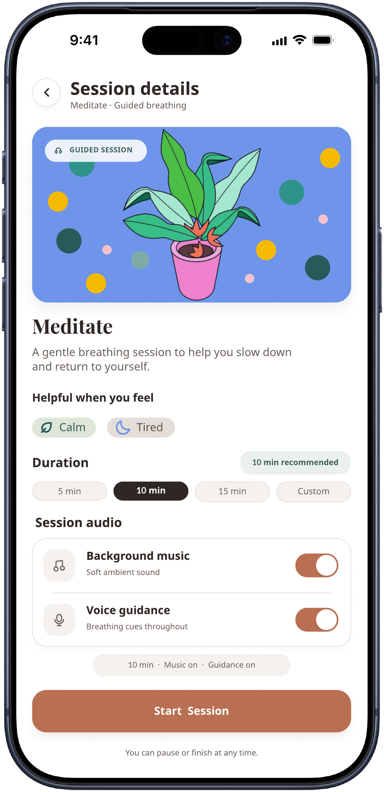
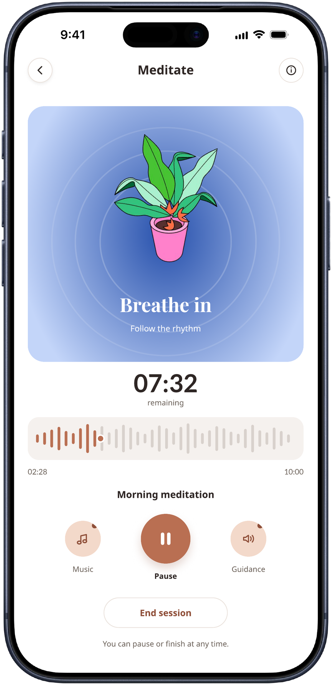
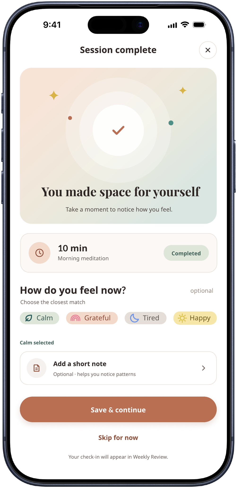
Final Design 04
Reflection and progress
The weekly review summarizes mood patterns, moments created, and completed sessions. It helps users notice emotional patterns over time without turning wellbeing into a competitive score.
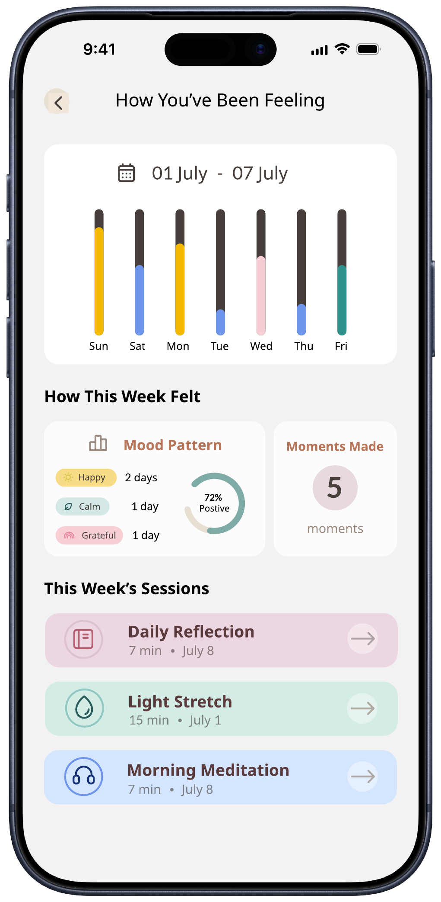
Final Design 05
Personalized reminders and account controls
Notifications surface timely reflections, weekly reviews, and friend activity without turning emotional care into constant engagement.
Profile and reminder settings give users clear control over privacy, schedules, quiet hours, and the kinds of prompts they want to receive.
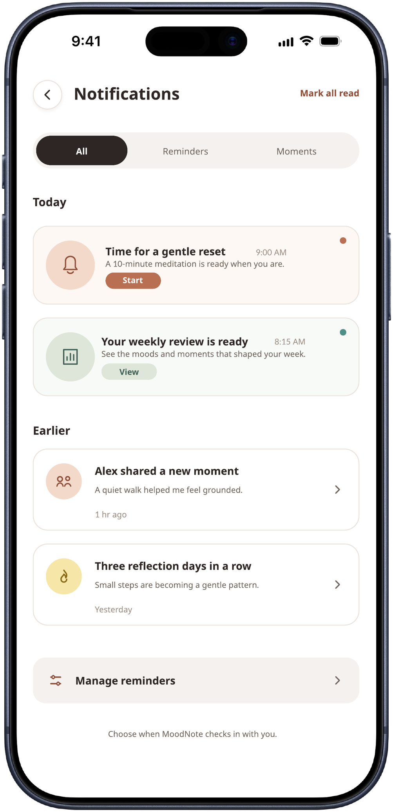
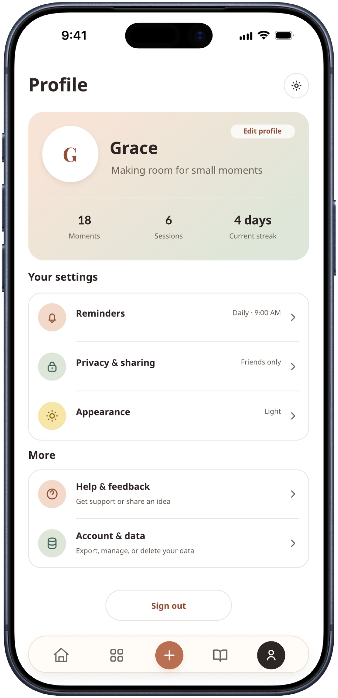
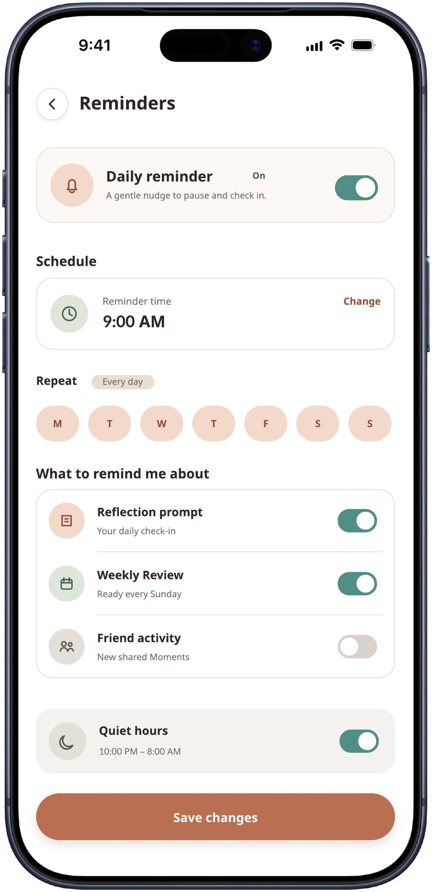
Iterations & Key Decisions
Refining hierarchy, language, and emotional tone
Selected iterations and annotated design decisions will be added here after the wireframes and workflow documentation are ready.
Outcome & Reflection
Expanding from website design into a connected mobile product
MoodNote helped me practice designing across a connected mobile experience rather than a collection of isolated screens. The project brought together information architecture, interaction choices, emotional language, data visualization, and a consistent visual system.